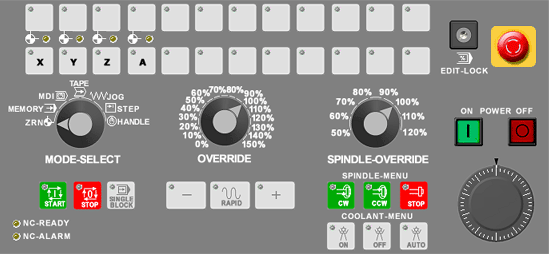

程序运行停止，在数控程序运行中，按下此按钮停止程序运行。
程序单段执行。
机床主轴手动控制开关
| EZMotion-NC 60T操作面板 |
机床操作面板位于窗口的右下侧，如下图所示。主要用于控制机床的运动和选择机床运行状态，
由模式选择旋钮、数控程序运行控制开关等多个部分组成，每一部分的详细说明如下。

数控程序运行控制开关
 程序运行开始；模式选择旋钮在“AUTO”和“MDI”位置时按下有效，其余时间按下无效。
程序运行开始；模式选择旋钮在“AUTO”和“MDI”位置时按下有效，其余时间按下无效。
程序运行停止，在数控程序运行中，按下此按钮停止程序运行。
程序单段执行。
机床主轴手动控制开关
手动开机床主轴正转
 手动开机床主轴反转
手动开机床主轴反转
手动关机床主轴
冷却液控制
冷却液开
冷却液关
冷却液自动控制
手动移动机床台面按钮
模式选择旋钮
ZRN：回参考点
用手动操作方式将控制轴定位在机械参考点
。
MEMORY：记忆模式 对内存中的程序运转操作选择这一模式。
MDI：手动数据输入。
TAPE：纸带模式 对纸带操作选择这一模式。
JOG：增量模式，用选定的固定长度，控制轴移动。
STEP：寸动进给模式 用手动进给速度，可连续地控制轴移动。
HANDLE：手轮进给模式 用手轮控制轴移动。
进给速度(F)调节旋钮
调节数控程序运行中的进给速度，调节范围从0～150% 。置光标于旋钮上，点击鼠标左键转动。
主轴速度调节旋钮
调节主轴速度，速度调节范围从0～120%。
手轮
把光标置于手轮上，按鼠标左键，移动鼠标，手轮顺时针转，机床往正方向移动，手轮逆时针转，机床往负方向移动。
程序编辑开关